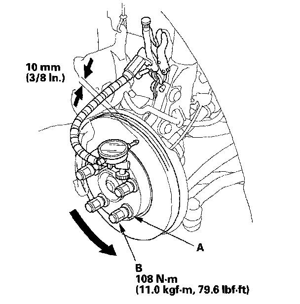
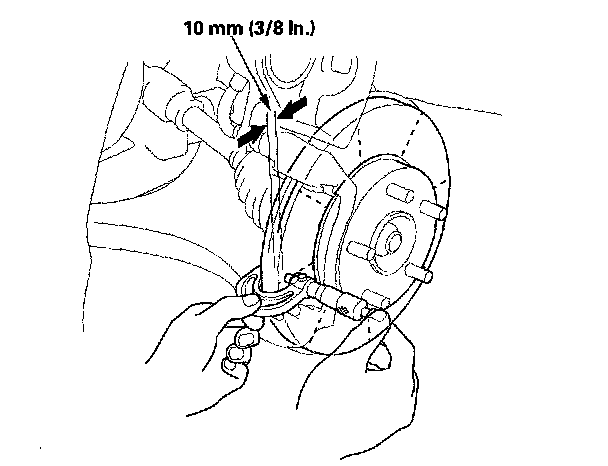

Front
Front Brake Disc InspectionRunout
1. Raise the front of the vehicle, and support it with safety stands in the proper locations.
2. Remove the front wheels.
3. Remove the brake pads.
4. Inspect the brake disc surface for damage and cracks. Clean the brake disc thoroughly, and remove all rust.
5. Install suitable flat washers (A) and wheel nuts (B), and tighten the wheel nuts to the specified torque to hold the brake disc securely against the hub.

6. Set up the dial gauge against the brake disc as shown, and measure the runout at 10 mm (3/8 in.) from the outer edge of the brake disc.
Brake disc runout:
Service limit: 0.04 mm (0.0016 in.)
7. If the brake disc is beyond the service limit, refinish the brake disc with an on-car brake lathe. The Kwik-Lathe produced by Kwik-Way Manufacturing Co. and the "Front Brake Disc Lathe" offered by Snap-on Tools Co. are approved for this operation.
Max. refinishing limit:
Except Si model: 19.0 mm (0.75 in.)
Si model: 23.0 mm (0.91 in.)
NOTE:
^ If the brake disc is beyond the service limit for refinishing, replace it.
^ A new brake disc should be refinished if its runout is greater than 0.04 mm (0.0016 in.).
Thickness and Parallelism
1. Raise the front of the vehicle, and support it with safety stands in the proper locations.
2. Remove the front wheels.
3. Remove the brake pads.
4. Using a micrometer, measure the brake disc thickness at eight points, about 45° apart and 10 mm (3/8 in.) in from the outer edge of the brake disc. Replace the brake disc if the smallest measurement is less than the max. refinishing limit.
Brake disc thickness:
Standard:
Except Si model: 20.9 - 21.1 mm (0.82 - 0.83 in.)
Si model: 24.9 - 25.1 mm (0.98 - 0.99 in.)
Max. refinishing limit:
Except Si model: 19.0 mm (0.75 in.)
Si model: 23.0 mm (0.91 in.)
Brake disc parallelism: 0.015 mm (0.0006 in.) max.
NOTE: This is the maximum allowable difference between the thickness measurements.

5. If the brake disc is beyond the service limit for parallelism, refinish the brake disc with an on-car brake lathe. The Kwik-Lathe produced by Kwik-Way Manufacturing Co. and the "Front Brake Disc Lathe" offered by Snap-on Tools Co. are approved for this operation.
NOTE: If the brake disc is beyond the service limit for refinishing, replace it.